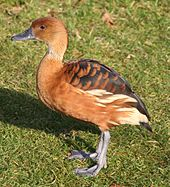
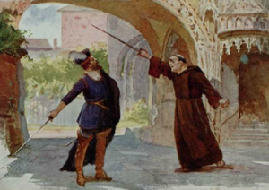

Main Page Contents Featured content Current events Random article Donate to Wikipedia Wikipedia store
the free encyclopedia that anyone can edit. 5,598,429 articles in English.
The fulvous whistling duck (Dendrocygna bicolor) is a tropical and subtropical bird in the family of ducks, geese and swans. It breeds in much of Mexico and South America, the West Indies, the southern US, sub-Saharan Africa and the Indian subcontinent. It has mainly reddish brown plumage, long legs and a long grey bill, and shows a distinctive white band across its black tail in flight. Like other members of its ancient lineage, it has a whistling call. The preferred habitat is shallow lakes, paddy fields or other wetlands with plentiful vegetation. The nest, placed among dense vegetation or in a tree hole, typically holds around ten whitish eggs, which hatch in 24–29 days. The downy grey ducklings leave the nest within a day or so of hatching, but the parents continue to protect them until they fledge around nine weeks later. The fulvous whistling duck feeds in wetlands by day or night on seeds and other parts of plants. It has a huge range and is not threatened, despite hunting, poisoning by pesticides and natural predation by mammals, birds and reptiles. The fulvous whistling duck is found in lowland marshes and swamps in open, flat country, and it avoids wooded areas. It is particularly attracted to wetlands with plenty of emergent vegetation, including rice fields.[18] It is not normally a mountain species, breeding in Venezuela, for example, only up 300 m (980 ft),[16] but the single Peruvian breeding record was at 4,080 m (13,390 ft).[5]Full article...
Ongoing: Rif Dimashq offensive · Turkish military operation in Afrin · UK higher education strike
Recent deaths: Bill Lucas · Lys Assia · Zell Miller · Wayne Huizenga
Since their first mission in June 2010, rockets from the Falcon 9 family have been launched 51 times. Of these, 49 missions were successful, ISS cargo vessel CRS-7 was destroyed in flight, and one mission placed Dragon CRS-1 in the correct orbit but failed to deliver a secondary payload. Additionally, one rocket exploded on the launch pad in a pre-flight test, destroying the Amos-6 satellite. Designed and operated by private manufacturer SpaceX, the Falcon 9 rocket family includes the retired versions Falcon 9 v1.0, v1.1 and v1.2 "Full Thrust", the current "Full Thrust Block 4" upgrade and Falcon Heavy, and the in-development Falcon 9 Block 5. The Falcon design features reusable first-stage boosters, landing either on a ground pad near the launch site, or on a drone ship at sea. Falcon 9 was the first rocket to land propulsively after delivering a payload to orbit. This achievement is expected to significantly reduce launch costs. (Full list...)
An 1884 illustration by Carlo Cornaglia of the Milan premiere of Don Carlos. This grand opera, composed by Giuseppe Verdi to a French-language libretto by Joseph Méry and Camille du Locle, is adapted from Friedrich Schiller's dramatic play Don Carlos and tells the conflicts of Carlos, Prince of Asturias (1545–1568). First performed in 1867, the opera exists in numerous versions, the longest of which lasts four hours.
Carlo Cornaglia was a piedmontese painter and ilustrator of XIX century from Aqui Terme but his exact birth and death date is unknown. Anyway the first mention of Cornaglia as painter is in "Calendario generale del regno" (Kingdom General Calendar) edited by Ministry of Interiors of Sardinia Kingdom on 1854. Lately he worked in Milan for the illustrated magazine "Il secolo illustrato" of the daily newspaper "Il Secolo". On 1872 he moved in Rome working for another magazine called "L'Illustrazione Italiana" and he published on both magazine until 1899, when appeared his last known publication entitled "Le scoperte telegrafiche di Luigi Cerrebotani" in "Il Secolo Illustrato della Domenica".